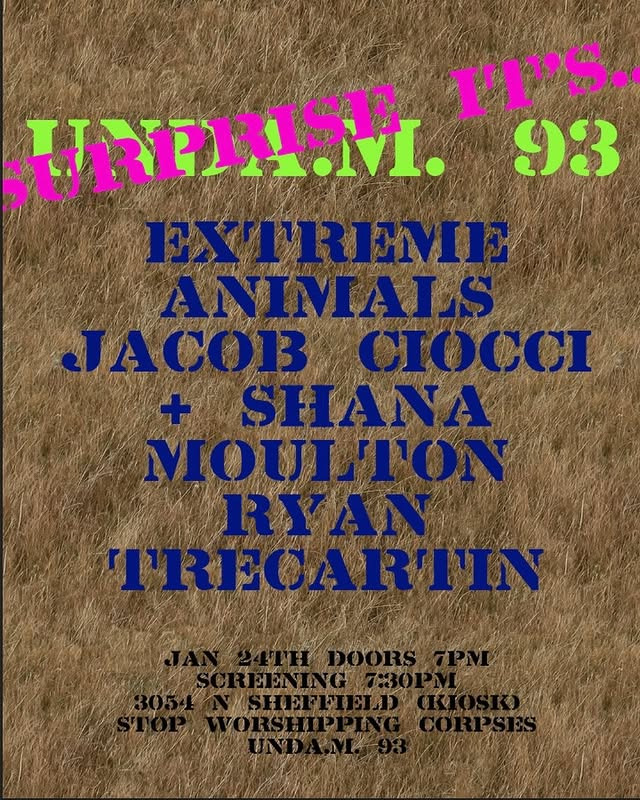

surprise screening
Unda.m. 93 is very excited to announce our surprise screening for Stop Worshipping Corpses at Kiosk including video works from
Extreme Animals
Jacob Ciocci & Shana Moulton
Ryan Trecartin
Jan 24th Doors 7 screening 7:30